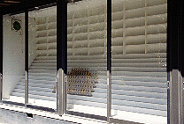

高谷大観音/千葉県市川市
千葉の湾岸エリア、湾岸市川インター付近はやたらでかい道に倉庫街、人の気配なし、トラックガンガンという絵に書いたようなテイストレスな所である。
倉庫やスクラップ車、空き地、トラックの駐車場などが居並ぶ不毛の地に突如、「十二支守り本尊 高谷大観音」というロードサインが現われる。
とある日曜の朝、渋滞中の湾岸線を避けるべく裏道を車で走行中、私はこのロードサインを見つけてしまった。
え、なんでこんなトコに観音様が、しかも「大」まで付いてるぞ。と思いながらも勿論ハンドルはその看板の矢印の方向に。
するといきなり目の前の塀の向こう側に10メートル近い金ピカの観音像があった。しかもズラリと8体も並んで。これは相当インパクトがあった。
人もろくにいない倉庫街のど真ん中に大観音8体。日頃から大観音を愛好するあまりついに幻覚でも見ちゃったんじゃないか、と思った程だ。
しかし良くみると様子が変だ。観音像のすぐ背後には巨大な倉庫風の建物があり、屋根には御丁寧にも観音像に負けないくらいのでっかい看板が付いている、「東京流通」と。
一体なんなんだ、ここは倉庫なのか寺なのか。そうしている間にも塀にペイントされた「学問の神様 高谷天神社」なる文字なども見え、観音像を発見してからわずか数秒で私の頭は混乱の極みに達していた。
さらに数秒後には門を潜りその広い敷地内に入り、全景を見るにあたって、私は絶句してしまった。なんと倉庫に見えた建物は巨大なディスカウントストアで、ニューファミリーさん達が車で続々と押し寄せているのだ。
それでもディスカウントストアと観音様のギャップは私の中では埋められず、取りあえず店員さんの「いらっしゃい」攻撃を無視して店の入り口の横を通って観音像に向かう。
前述の通り金ピカの観音像は全部で8体。十二支の守り本尊で、細工は中々良く出来ている。お参りをするとセンサーが感知して各観音の説明までしてくれる。
その横には小さな池とお地蔵様、その隣の小屋にはガラスのショーケースの中に雛壇があり、万体仏のつもりなのだろう小さい仏像が並んでいた。しかしその仏像の数は少なく、しかも最近奉納された様子がない。大観音像の周りには商品のパレットや空き箱が積まれており、明らかに廃虚一歩手前というか、「終わっちゃってる」感が濃厚だ。

さらに店の周りを見渡す。駐車場のはずれに神社を発見。高谷天神社である。そしてその駐車場を囲むようにブロンズの彫刻作品が並んでいる。うむむ、怪しい。と思いつつ彫刻群を眺めているとそこに草に埋もれかかった場内の案内図を発見。
するとそこには戦国合戦迷路や宝物殿、奉行所などと書かれている。どう見てもそれらの場所は駐車場なのに、である。
つまり、それらの建物は以前あったが取り壊されてしまった、ということなのだろう。
奥の方の高谷城下町と案内にあったところも建物は残っているものの半分廃虚状態で、商品の倉庫になっていた。「市川江戸村」の看板が空しい。
先ほどから背後に店員の視線を感じる。ここに来るのは店の客だけと信じて疑わない店員さんにとって壊れかけた建物や無用の長物と化しつつある観音像などに興味を持ってやって来た私は相当怪しい人物と見えたようだ。写真とか撮ってるし。
そのうちの一人を捕まえて話を聞いてみた。曰く、ここは以前からディスカウントストアを経営していたが10数年前、社長が長野のとあるダムに沈んでしまう村から神社と梵鐘を移築してきて観音像を建てて、ついでに敷地内を江戸村に仕立て上げてしまったそうな。
ま、江戸村構想に感しては客寄せのアイデアだったのだろうが、神社の移築と観音像建立に関しては、単なる客寄せとは違う熱い思いを感じた。ちなみにここの家具部門の名前は天神家具。信仰心が篤いんでしょう。
という訳で江戸村構想は夢破れ、朽ちかけてしまったが、神社と観音像自体のメンテナンスは行なわれていて、信仰心までもが朽ちてしまった訳ではないようだ。
ちなみにディスカウントストア自体は普通の店で、品揃え万端、激安です（宣伝）。
1999.08.
追記
風の噂に閉店の噂を聞きました。ディスカウントスアはもうないかも・・・
さらに追記（2012.07.）
大観音軍団の移転先が判明しました！
＃337谷厳寺
珍寺大道場 HOME